2 GitLab Runner安装注册配置管理
GitLab Runner是一个开源项目，用于运行您的作业并将结果发送回GitLab。它与GitLab CI结合使用，GitLab CI是GitLab随附的用于协调作业的开源持续集成服务。
安装要求
GitLab Runner是用Go编写的，可以作为一个二进制文件运行，不需要特定于语言的要求。它旨在在GNU / Linux，macOS和Windows操作系统上运行。只要您可以在其他操作系统上编译Go二进制文件，其他操作系统就可能会运行。
如果要使用Docker，请安装最新版本。GitLab Runner需要最少的Docker v1.13.0。
GitLab Runner版本应与GitLab版本同步。
可以在GNU / Linux，macOS，FreeBSD和Windows上安装和使用GitLab Runner 。您可以使用Docker安装它，手动下载二进制文件，也可以使用GitLab提供的rpm / deb软件包的存储库。
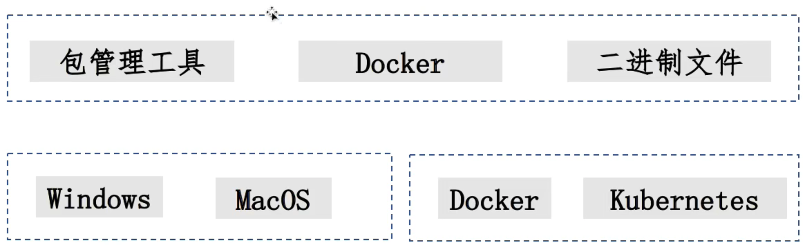
Add GitLab's official repository：添加官方仓库
# For Debian/Ubuntu/Mint
curl -L https://packages.gitlab.com/install/repositories/runner/ditlab-runner/script.deb.sh | sudo bash
# For RHEL/CentOS/Fedora
curl -L https://packages.gitlab.com/install/repositorles/runner/gatlab-runner/script.rpm.sh | sudo bash
Install the test vers!on of GitLab Runner: 安装最新版本
#For Debian/Ubuntu/Mint
sudo apt-get install gitlab-runner
#For RHEL/Centos/Fedora
sudo yum install gitlab-runner
更新runner
#For Debian/Ubuntu/Mint
sudo apt-get update
sudo apt-get install gitlab-runner
#For RHEL/CentOS/Fedora
sudo yum update
sudo install gitlab-runner
To install a specific version of GitLab Runner 安装指定版本
#for DEB based systems
apt-cache madison gitlab-runner
sudo apt-get install gitlab-runner=10.0.0
#for RPM based systems
yum list gitlab-runner --showduplicates | sort -r
sudo yum install gitlab-runner-10.0.0-1
基于centos安装
下载软件包
https://gitlab-runner-downloads.s3.amazonaws.com/latest/index.html上找到最新的文件名和选项。- 选择一个版本并下载二进制文件，如文档所述，该文件用于下载任何其他标记的GitLab Runner发行版。
curl -LJO https://gitlab-runner-downloads.s3.amazonaws.com/latest/deb/gitlab-runner_<arch>.deb
dpkg -i gitlab-runner_<arch>.deb
dpkg -i gitlab-runner_<arch>.deb
curl -LJO https://gitlab-runner-downloads.s3.amazonaws.com/latest/rpm/gitlab-runner_<arch>.rpm
rpm -i gitlab-runner_<arch>.rpm
rpm -Uvh gitlab-runner_<arch>.rpm
Gitlab runner安装二进制文件
#Linux x86-64
sudo curl -L -output /usr/local/bin/gitlab-runner https://gitiab-runner-downloads.s3.amazonaws.com/latest/binaries/gitlab-runner-linux-amd64
#Linux x86
sudo curl -L -output /usr/local/bin/gitlab-runner https://gitiab-runner-downloads.s3.amazonaws.com/latest/binaries/gitlab-runner-linux-386
#Linux arm
sudo curl -L -output /usr/local/bin/gitlab-runner https://gitiab-runner-downloads.s3.amazonaws.com/latest/binaries/gitlab-runner-linux-arm
#Linux arm64
sudo curl -L -output /usr/local/bin/gitlab-runner https://gitiab-runner-downloads.s3.amazonaws.com/latest/binaries/gitlab-runner-linux-arm64
基于macos系统安装
- 手动安装
下载二进制
sudo curl --output /usr/local/bin/gitlab-runner https://gitlab-runner-downloads.s3.amazonaws.com/v12.6/binaries/gitlab-runner-darwin-amd64
授予其执行权力
sudo chmod +x /usr/local/bin/gitlab-runner
将runner作为服务安装并启动它
gitlab-runner install
gitlab-runner start
- 自动安装
安装，启动
brew install gitlab-runner
brew services start gitlab-runner
更新
gitlab-runner stop
sudo curl --output /usr/local/bin/gitlab-runner https://gitlab-runner-downloads.s3.amazonaws.com/v12.6/binaries/gitlab-runner-darwin-amd64
sudo chrnod +x /usr/local/bin/gitlab-runner
gitlab-runner start
基于Docker运行
mkdir ~/data/gitlab-runner/config
docker run --rm -t -id -v ~/data/gitlab-runner/config:/etc/gitlab-runner gitlab/gitlab-runner:v15.1.0
安装总结
Linux：在清华源下载runner rpm包/配置yum源安装。
https://mirrors.tuna.tsinghua.edu.cn/gitlab-runner/yum/el7/gitlab-runner-12.9.0-1.x86_64.rpm
我的实验
mkdir ~/k8s_test/gitlab/runner-config
docker run --rm -t -id -v ~/k8s_test/gitlab/runner-config:/etc/gitlab-runner gitlab/gitlab-runner:latest
$ docker ps | grep gitlab-runner
b55224151446 gitlab/gitlab-runner:latest "/usr/bin/dumb-init …" 3 minutes ago Up 3 minutes inspiring_merkle
docker exec -it b55224151446 sh
# gitlab-runner -h
NAME:
gitlab-runner - a GitLab Runner
USAGE:
gitlab-runner [global options] command [command options] [arguments...]
VERSION:
15.1.0 (76984217)
AUTHOR:
GitLab Inc. <support@gitlab.com>
COMMANDS:
exec execute a build locally
list List all configured runners
run run multi runner service
register register a new runner
install install service
uninstall uninstall service
...
2 GitLab Runner注册
-
注册步骤：
获取 runner token -› 进行注册
-
GitLabRunner 类型
- shared：运行整个平台项目的作业(gitlab)
- group: 运行特定group下的所有项目的作业(group)
- specific：运行指定的项目作业(project)
- locked： 无法运行项目作业
- paused： 不会运行作业
2-1 获取注册token-shared类型
获取 shared 类型 runnertoken
进入系统设置-＞ Runners
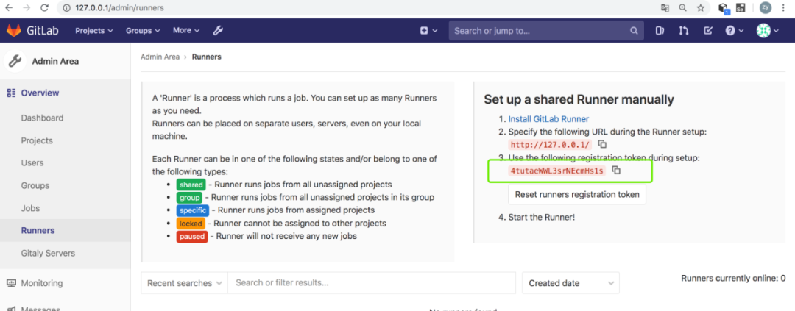
2-2 获取group类型的runnertoken
进入group -> Settings -> CI/CD -> Runners -> Group Runners
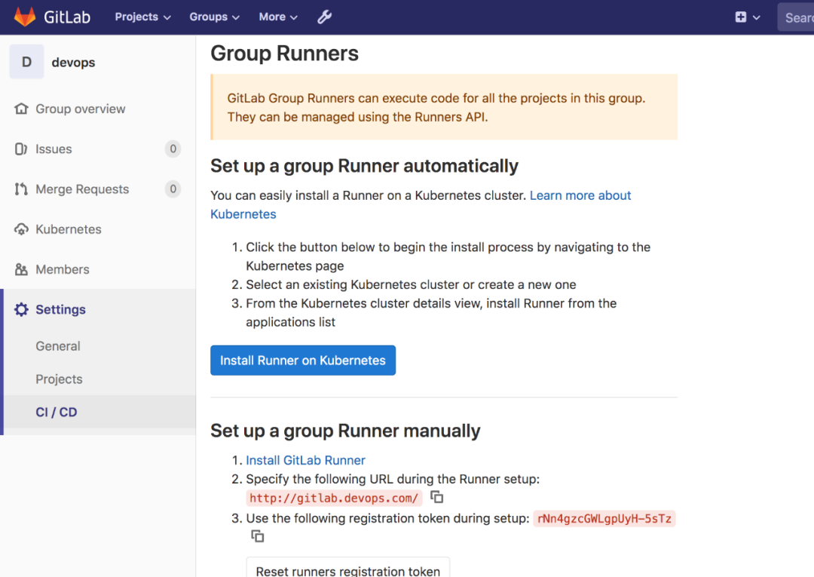
2-3 获取注册token-specific类型
进入具体的项目 -> Settings -> CI/CD -> Runners -> Specific Runners
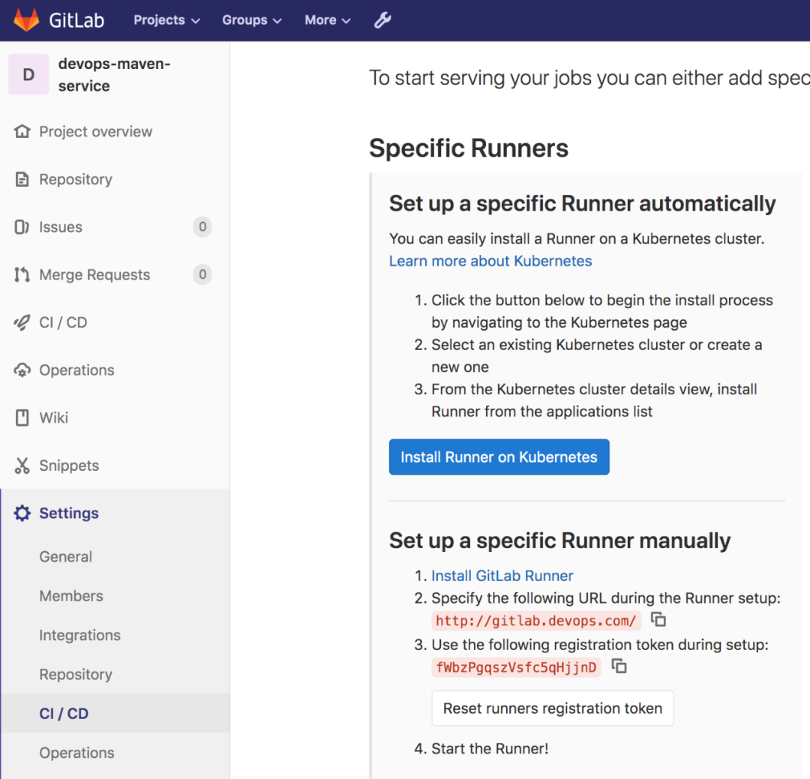
进行注册-交互式
http://127.0.0.1:32220
启动容器交互式注册
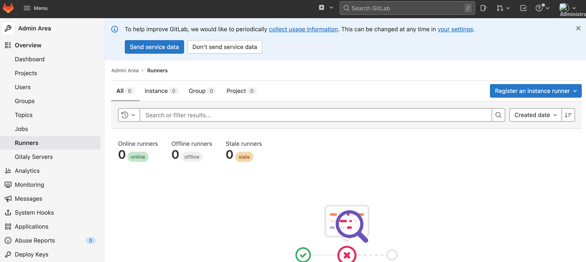
http://127.0.0.1:32220/nzTshoYwsnCttkyzZBxEdevops-service-runnerbuild
docker run -it -v ~/data/gitlab-runner/config:/etc/gitlab-runner --network=host gitlab/gitlab-runner:v15.1.0 register
--network=host是关键中的关键，因为你要访问本地的localhost
$ docker run -it --rm -v ~/k8s_test/gitlab/runner-config:/etc/gitlab-runner --network=host --restart=always gitlab/gitlab-runner:v15.1.0 register
Runtime platform arch=amd64 os=linux pid=7 revision=76984217 version=15.1.0
Running in system-mode.
Enter the GitLab instance URL (for example, https://gitlab.com/):
http://127.0.0.1:32220/
Enter the registration token:
nzTshoYwsnCttkyzZBxE
Enter a description for the runner:
[docker-desktop]: devops-service-runner
Enter tags for the runner (comma-separated):
build,deploy
Enter optional maintenance note for the runner:
n
Registering runner... succeeded runner=nzTshoYw
Enter an executor: custom, docker, parallels, ssh, docker+machine, kubernetes, docker-ssh, shell, virtualbox, docker-ssh+machine:
shell
Runner registered successfully. Feel free to start it, but if it's running already the config should be automatically reloaded!
$ docker run -it -v ~/k8s_test/gitlab/runner-config:/etc/gitlab-runner --network=host --restart=always gitlab/gitlab-runner:v15.1.0 register
- Enter the GitLab instance URL (for example, https://gitlab.com/):
- 输入gitlab的服务URL
- Enter the registration token:
- 输入令牌,参考上图
- Enter a description for the runner:
- 输入Runner描述
- Enter tags for the runner (comma-separated)
- 给这个gitlab-runner输入一个标记，这个tag非常重要，在后续的使用过程中需要使用这个tag来指定gitlab-runner（yml文件，job通过设置tags标签选用指定的Runner)
- Enter optional maintenance note for the runner:
- 输入可选维护说明: Enter an executor: docker+machine, docker-ssh+machine, custom, docker-windows, docker-ssh, ssh, kubernetes, docker, parallels, shell, virtualbox:
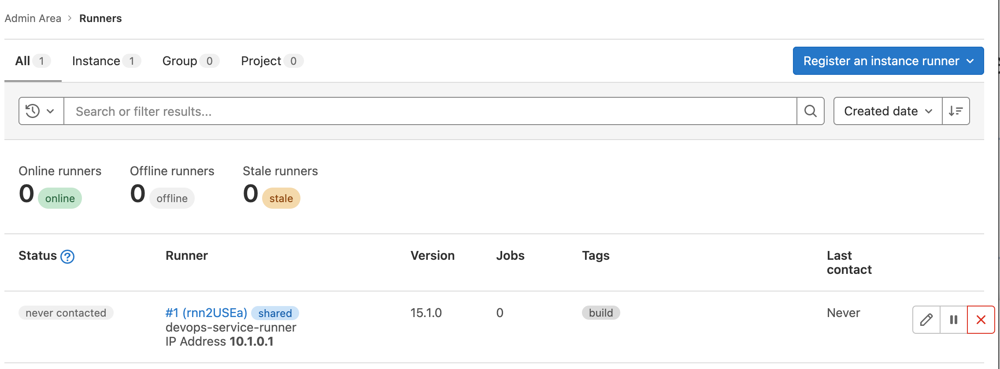
$ docker exec -it aed10f1e614c sh
# gitlab-runner run
Runtime platform arch=amd64 os=linux pid=21 revision=76984217 version=15.1.0
Starting multi-runner from /etc/gitlab-runner/config.toml... builds=0
Running in system-mode.
Configuration loaded builds=0
listen_address not defined, metrics & debug endpoints disabled builds=0
[session_server].listen_address not defined, session endpoints disabled builds=0
ERROR: Checking for jobs... forbidden runner=faDQf6_F
ERROR: Checking for jobs... forbidden runner=MsUXFgx3
ERROR: Checking for jobs... forbidden runner=faDQf6_F
ERROR: Checking for jobs... forbidden runner=MsUXFgx3
ERROR: Checking for jobs... forbidden runner=faDQf6_F
ERROR: Runner http://127.0.0.1:32220/faDQf6_F1G4Ai1bM3yet is not healthy and will be disabled!
ERROR: Checking for jobs... forbidden runner=MsUXFgx3
ERROR: Runner http://127.0.0.1:32220/MsUXFgx3dnRHknKssGoS is not healthy and will be disabled!
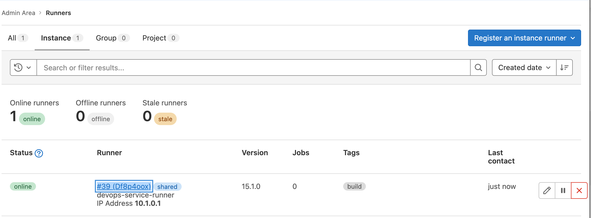
- http://localhost:32220/admin/runners/39
- http://localhost:32220/admin/runners/39/edit
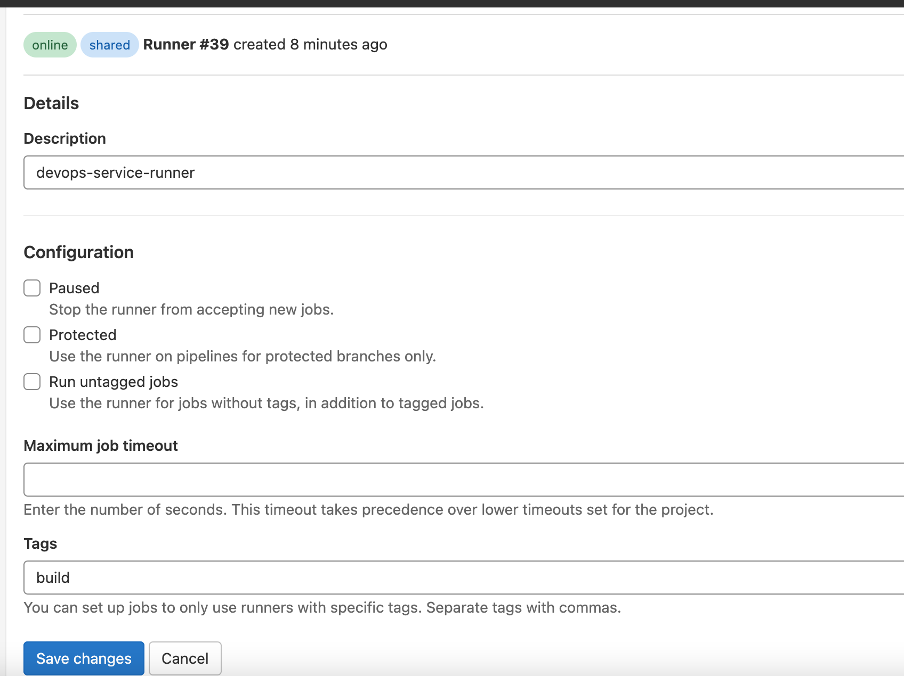
执行器功能对比表
- Shell
- Docker
- Kubernetes
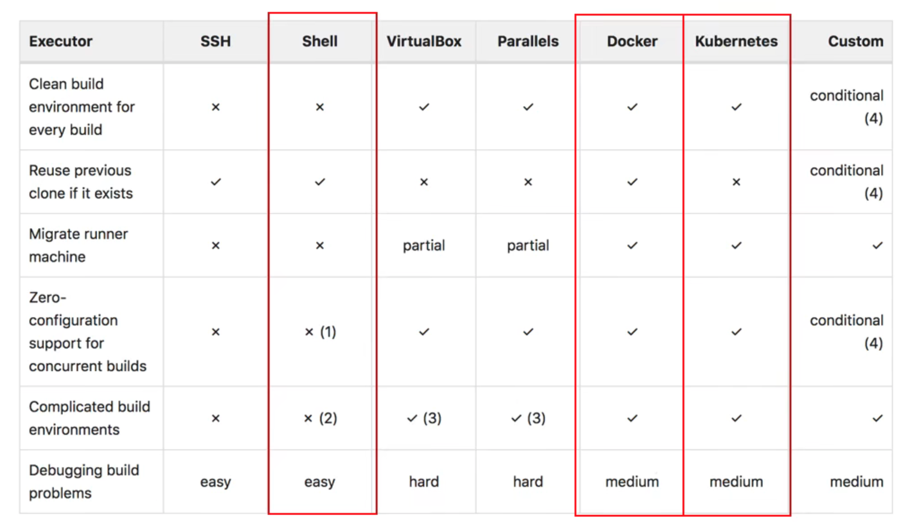
进行注册-非交互式
docker run -itd --rm -v /Users/i515190/k8s_test/gitlab/runner-config:/etc/gitlab-runner --network=host gitlab/gitlab-runner:v15.1.0 register \
--non-interactive \
--executor "shell" \
--url "http://127.0.0.1:32220/" \
--registration-token "nzTshoYwsnCttkyzZBxE" \
--description "devops-runner" \
--tag-list "build,deploy" \
--run-untagged="true" \
--locked="false" \
--access-level="not_protected"
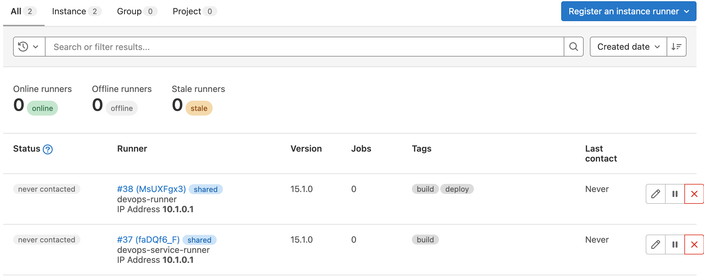
常用命令
启动命令
gitlab-runner --debug <command> #调试模式排查错误特别有用。
gitlab-runner <command> --help #获取帮助信息
gitlab-runner run #普通用户模式 配置文件位置 ~/.gitlab-runner/config.toml
sudo gitlab-runner run # 超级用户模式 配置文件位置/etc/gitlab-runner/config.toml
注册命令
gitlab-runner register #默认交互模式下使用，非交互模式添加 --non-interactive
gitlab-runner list #此命令列出了保存在配置文件中的所有运行程序
gitlab-runner verify #此命令检查注册的runner是否可以连接，但不验证GitLab服务是否正在使用runner。--delete 删除
gitlab-runner unregister #该命令使用GitLab取消已注册的runner。
#使用令牌注销
gitlab-runner unregister --url http://gitlab.example.com/ --token t0k3n
#使用名称注销（同名删除第一个）
gitlab-runner unregister --name test-runner
#注销所有
gitlab-runner unregister --all-runners
服务管理
gitlab-runner install --user=gitlab-runner --working-directory=/home/gitlab-runner
# --user指定将用于执行构建的用户
#`--working-directory 指定将使用**Shell** executor 运行构建时所有数据将存储在其中的根目录
gitlab-runner uninstall #该命令停止运行并从服务中卸载GitLab Runner。
gitlab-runner start #该命令启动GitLab Runner服务。
gitlab-runner stop #该命令停止GitLab Runner服务。
gitlab-runner restart #该命令将停止，然后启动GitLab Runner服务。
gitlab-runner status #此命令显示GitLab Runner服务的状态。当服务正在运行时，退出代码为零；而当服务未运行时，退出代码为非零
3 GitLab的cicd自动发布构建流程
$ docker exec -it aed10f1e614c sh
# gitlab-runner run
Create Sample Gitlab Maven repo
http://localhost:32220/-/profile/preferences
User Settings -> SSH keys
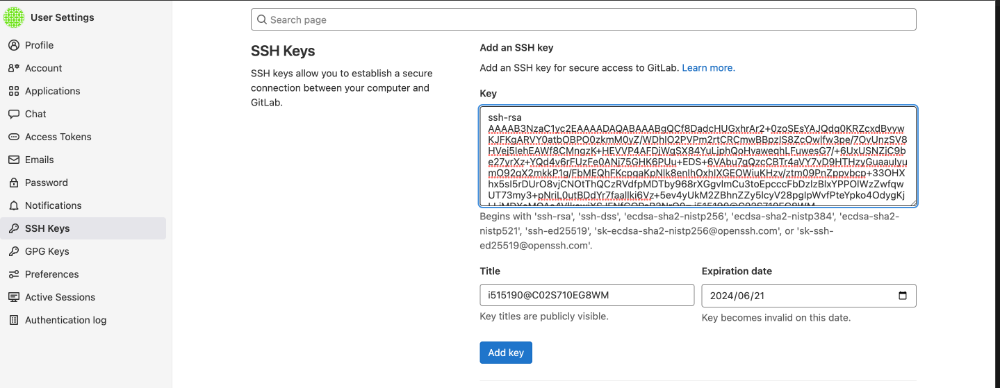
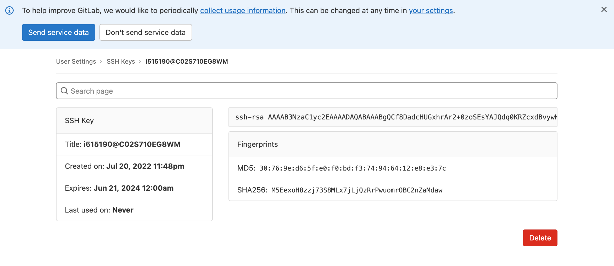
$ git clone ssh://git@localhost:30022/gitlab-instance-8f6af96c/demo-mvn-project.git
Cloning into 'demo-mvn-project'...
remote: Enumerating objects: 3, done.
remote: Counting objects: 100% (3/3), done.
remote: Compressing objects: 100% (2/2), done.
remote: Total 3 (delta 0), reused 0 (delta 0), pack-reused 0
Receiving objects: 100% (3/3), done.
Clone Sample Maven Code
https://github.com/jenkins-docs/simple-java-maven-app
cd simple-java-maven-app
cp * ../demo-mvn-project
git add -A
git push -uf origin main
运行流水线任务
.gitlab-ci.yml
stages:
- build
- deploy
build:
stage: build
tags:
- build
only:
- main
script:
- echo "mvn clean "
- echo "mvn install"
deploy:
stage: deploy
tags:
- deploy
only:
- main
script:
- echo "hello deploy"
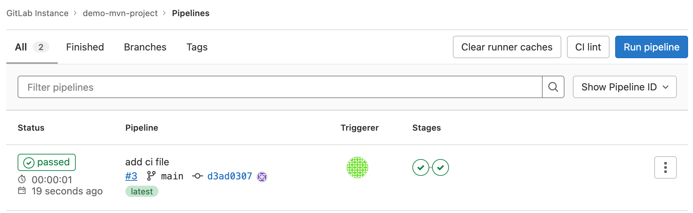
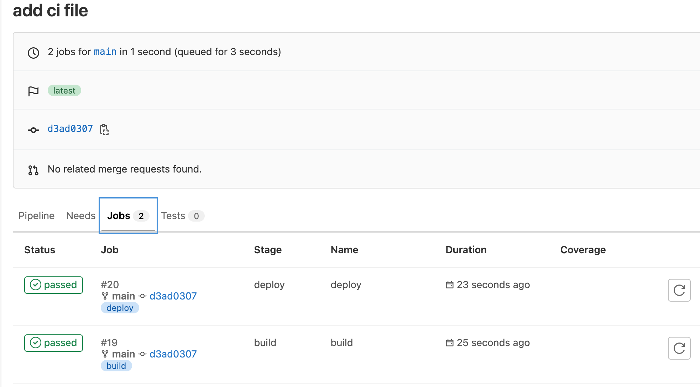